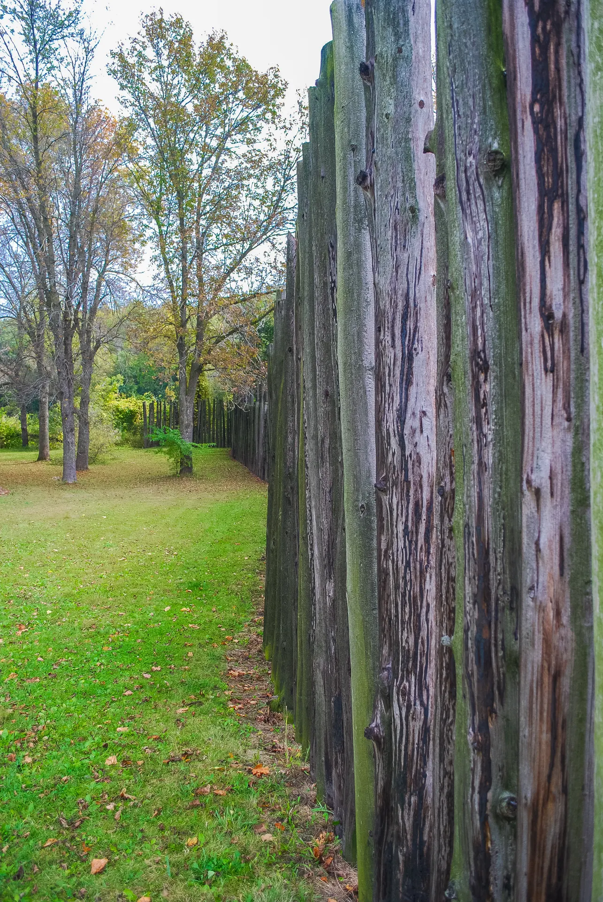
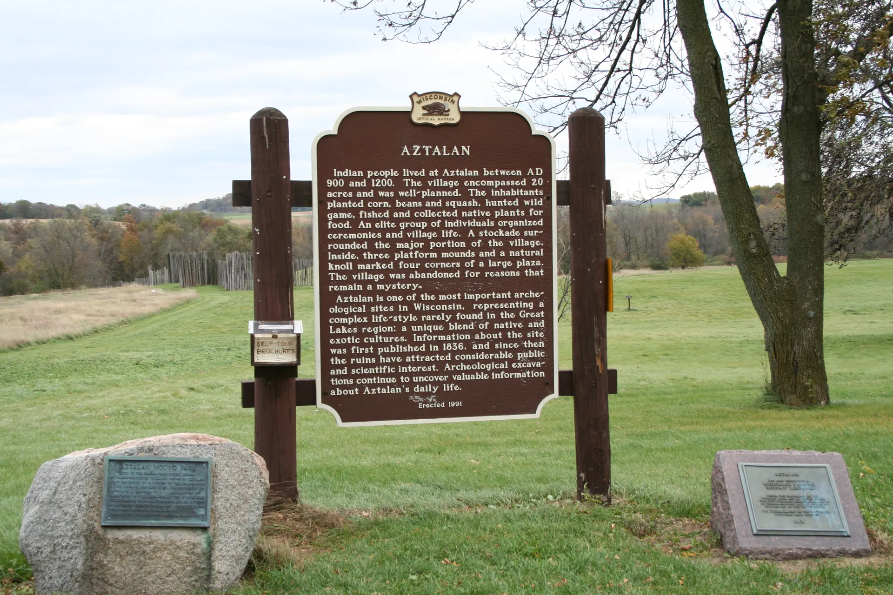

The Ancient Settlement
Where a Great Civilization
Once Flourished
Around 900 CE, a group of Mississippian people — likely with origins near Cahokia, the great city near modern East St. Louis — established a thriving settlement on the banks of the Crawfish River in what is now Jefferson County, Wisconsin.
This settlement, which we now call Aztalan, was no ordinary village. It was a planned community covering what would become 172 acres, enclosed by a massive wooden stockade with regularly spaced bastions. Within its walls, residents built three major platform mounds — earthen monuments constructed by hand over many generations, serving as ceremonial centers, elite residences, and expressions of political and religious power.
The people of Aztalan were part of an expansive trade network that reached from the Great Lakes region to the Gulf Coast. Copper from Lake Superior, marine shells from the Gulf, and exotic goods from hundreds of miles away have been found in archaeological excavations here — testament to the far-reaching connections of this northern Mississippian outpost.
The settlement flourished for approximately 400 years before being abandoned around 1300 CE. The reasons for the abandonment remain a subject of ongoing scholarly debate — climate change, conflict, resource depletion, and changing political dynamics within the broader Mississippian world have all been proposed.

The reconstructed area of the ancient Aztalan settlement, showing the scale of this remarkable site.

The entrance to Aztalan State Park in Jefferson County, Wisconsin.